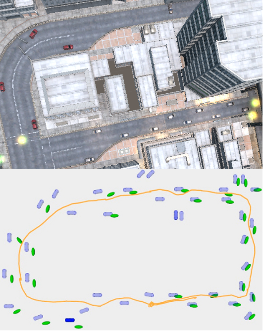

Object residual constrained Visual-Inertial Odometry
Object residual constrained Visual-Inertial Odometry
Department of Electrical and Computer Engineering
University of California,
San Diego
IROS, 2020
|
Overview
Teaser

|
This animation shows color-coded object level tracks of semantic keypoints, and
green tracks of geometric features.
|

|
This animation shows the 2D IOU of bounding-boxes from annotation and those
detected by YOLO. In the label, id means our object id, while gt means id in annotation.
|

|
This animation shows the reprojected objects. The object state is reprojected on
the image, where object detection is the blue rectangle, object shape is the red wireframe, and the green
ellipse is the reprojection of the ellipsoid that we use to represent objects.
|
Presentation
IROS 2020 short version
IROS 2020 long version
演讲视频
More results for OrcVIO
Semantic keypoint detection
Our approach uses StarMap for semantic keypoint detection. As could be observed in the upper row in Figure below, it
could handle a certain degree of viewpoint, scale, and visibility variation, since StarMap uses a large training set
to prevent overfitting.
Nonetheless, the lower row shows some failure cases due to occlusion or instance variation. Wrong detections or too
few detections will cause troubles in our approach.
|
Semantic keypoint detection from starmap.
|
Keypoint detection covariance
We use Monte Carlo Dropout to obtain the semantic keypoint covariances. Figure below shows how we insert the Dropout
layer into the Starmap network and the average covariance obtained from a sampled KITTI dataset.
|
Semantic keypoint uncertainty obtained from approximate Bayesian inference
through
the stacked hourglass convolutional neural network.
|
Below is a closer view of the keypoint covariance on one car.
|
Semantic keypoint uncertainty on one car.
|
Detection and tracking on KITTI
The front end could work with both colored images or grayscale images. Below is an exmaple of using color images as
input.
Object state reprojection on KITTI odometry sequences
KITTI raw data 09 26 0117
The top left window shows the semantic keypoints tracking, while the bottom left window shows the geometric features
tracking. The right window shows the trajectory estimation and object mapping.
Forest scene
This demo shows the peformance of OrcVIO in a forest using a RealSense sensor.
The red line represents the estimated trajectory of OrcVIO.
The purple ellispoid is the covariance of the pose.
OrcVIO: Lab scene with chairs and monitors
This demo shows the construction of an object map for the lab scene with chairs and monitors, using a RealSense sensor.
The red line is the estimated trajectory, and the axes mark the current pose. The black dots are the reconstructed geometric landmarks, whereas the green dots are the estimated semantic keypoints.
The blue ellipsoids are the chairs and the orange ellipsoids are the monitors mapped by OrcVIO.
Outdoor scene at UCSD campus
This demo shows the construction of an object map for the outdoor scene with chairs, bikes, and cars, using an
INDEMIND sensor. The red line is the estimated trajectory, and the axes mark the current pose. The green dots are the
estimated semantic keypoints. The blue ellipsoids are the chairs mapped by OrcVIO, whereas the red ellipsoids are the
bikes, and the black ellipsoids are the cars.
Object map with 40 cars in Unity simulator

|
Upper row: Unity simulation scene. Lower row: reconstructed objects, where the
orange line is the estimated trajectory, the green ellipsoids
are the reconstructed cars, and the blue meshes are the groundtruth car positions.
|
Object map with car and door categories in Unity simulator
|
We propose a tightly coupled visual-inertial odometry and object state
optimization algorithm. (a) A simulated scene from Unity, where a quadrotor flies over cars and doors. (b)
Color-coded semantic keypoint tracklets on cars and doors. (c) Estimated trajectory (green) that coincides
with the groundtruth trajectory (red), and the object map with reconstructed cars (green ellipsoids), doors
(red ellispoids), semantic keypoints (yellow spheres), and the groundtruth objects (blue meshes).
|
Demo with cars, doors, and barriers in Unity simulator
More results for OrcVIO Lite
KITTI odometry 06
OrcVIO Lite uses bounding box only and no semantic keypoints, more suitable for real time experiments. The test on
KITTI odometry 06 uses grayscale images for both front end and back end.
The red line is the estimated trajectory, while the purple ellipsoid is the covariance of the pose. The white points
are the geometric landmarks, the colored dots are the active features. The black spheres are the reconstructed cars.
Flea3 camera
OrcVIO Lite uses bounding box only and no semantic keypoints, more suitable for real time experiments. This test
uses grayscale images from a Flea3 camera.
The red line is the estimated trajectory, while the purple ellipsoid is the covariance of the pose. The white points
are the geometric landmarks, the colored dots are the active features. The black spheres are the reconstructed cars.
More results for OrcVIO Stereo
EuRoC V1 01
OrcVIO Stereo uses stereo camera instead of monocular camera to increase robustness. This demo shows its performance
on EuRoC V1 01 sequence.
The red line is ground-truth trajectory, while the blue line is the estimated trajectory.
EuRoC MH 01
OrcVIO Stereo uses stereo camera instead of monocular camera to increase robustness. This demo shows its performance
on EuRoC MH 01 sequence.
The red line is ground-truth trajectory, while the blue line is the estimated trajectory.
IROS Paper
@inproceedings{orcvio,
title = {OrcVIO: Object residual constrained Visual-Inertial Odometry},
author={M. {Shan} and Q. {Feng} and N. {Atanasov}},
year = {2020},
booktitle={IEEE Intl. Conf. on Intelligent Robots and Systems (IROS).},
url = {http://erl.ucsd.edu/pages/orcvio.html},
pdf = {https://arxiv.org/abs/2007.15107}
}
Code
Acknowledgements
There are some issues with the YouTube video links used previously (YouTube determines my account that only has research demo videos as spam, and terminated my account without warning.). Even though I tried my best to find all the videos, some are not recoverable.
We also changed to GitHub ♥ and bilibili to store videos.
This webpage template was borrowed from https://akanazawa.github.io/cmr/.
The acronym of our method is inspired by Warcraft III, and to celebrate that Fly100% won the WCG2020 using Orc.
QR code generated from https://www.qrcode-monkey.com/.
|
{kind=link}
{kind=link}
{kind=link}
{kind=link}
{kind=link}
{kind=link}